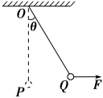
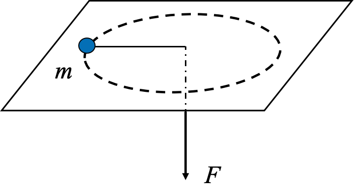
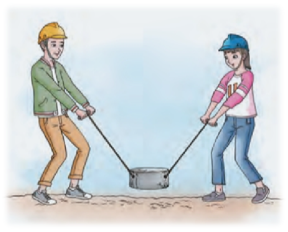
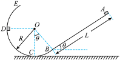
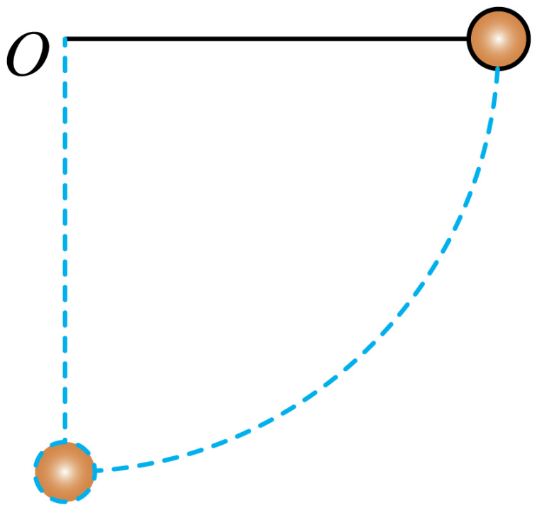
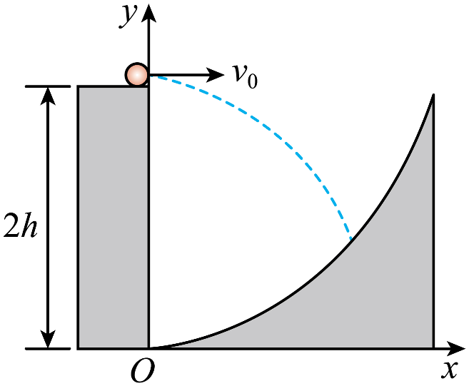
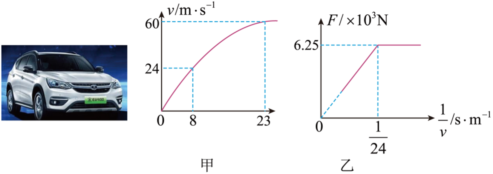

动能定理应用
变力做功问题
练习
质量为 m 的小球用长为 L 的细线悬挂于 O 点, 小球在水平拉力 E 作用下, 从 O 点的正下方的 P 点移动到 Q 点, 设此时细线与 OP 的夹角为 \theta, 如图所示。在此过程中, 若拉力分别是以下三种情况：
- 用 F 缓慢地拉，求拉力 F 做的功是多少？
- F 为恒力，求拉力 F 做的功？
- 若 F 为恒力, 而且拉到该位置时小球的速度刚好为零，求拉力 F 的大小？

练习
质量为 m 的物体用细绳经过光滑小孔牵引，且在光滑水平面上做匀速圆周运动，拉力为 F 时，转动半径为 R，当拉力逐渐增大到 6F 时，物体仍做匀速圆周运动，此时半径为 R /2，则拉力对物体做功为多大？

\begin{cases} m\frac{v_{0}^{2}}{R}=F \\ m\frac{v_{1}^{2}}{\frac{R}{2}}=6F \\ W=\frac{1}{2}mv_{1}^{2}-\frac{1}{2}mv_{0}^{2} \end{cases} \Rightarrow W=6FR-\frac{1}{2}FR=\frac{11}{2}FR
多过程问题
课本习题
人们有时用“打夯”的方式把松散的地面夯实。设某次打夯符合以下模型：两人同时通过绳子对重物各施加一个力，力的大小均为 F，方向都与竖直方向成 \theta，重物离开地面 h 后人停止施力，最后重物自由下落把地面砸深 l。已知重物的质量为 m。求：
- 重物刚落地时的速度是多大？
- 重物对地面的平均冲击力是多大？

- 2Fh\cos \theta=\frac{1}{2}mv^{2}\Rightarrow v=2\sqrt{ \frac{Fh\cos \theta}{m} }
- 记冲击力为 F'，两种解法：
- 从落地到停下：mgl-F'l=0-\frac{1}{2}mv ^{2}
- 从开始提升到停下：2Fh\cos \theta+mgl-F'l=0
练习
如图所示，AB 与 CD 为两个对称斜面，下部分别与一个光滑的圆弧面的两端相切，圆弧圆心角为 120°，半径 R=2\;m，A 点离圆弧底 M 点的高度为 h =4\;m，现将一个质量 m=1\;kg 的小物块从 A 点静止释放，若小物块与两斜面的动摩擦因数为 0.2，试求：
- 小物块第一次经过圆弧底 M 点时小物块的动能的大小；
- 最终小物块经过圆弧底 M 点时对圆弧的压力的大小；
- 小物块在两斜面上(不包括圆弧部分)一共能走多长路程。(g=10\;m/s^{2})

练习
如图所示，在竖直平面内，长为 L、倾角 \theta＝37° 的粗糙斜面 AB 下端与半径 R＝1 m 的光滑圆弧轨道 BCDE 平滑相接于 B 点，C 点是轨迹最低点，D 点与圆心 O 等高。现有一质量 m＝0.1 kg 的小物体从斜面 AB 上端的 A 点无初速度下滑，恰能到达圆弧轨道的 D 点．若物体与斜面之间的动摩擦因数 \mu＝0.25，不计空气阻力，g 取 10 m/s^{2}，sin 37°＝0.6，cos 37°＝0.8，求：
- 斜面 AB 的长度 L；
- 物体第一次通过 C 点时的速度大小 v_{C_{1}}；
- 物体经过 C 点时，轨道对它的最小支持力 N_{min}；
- 物体在粗糙斜面 AB 上滑行的总路程 s_{总}。

1
\begin{cases} h_{AD}=L\sin \theta-R\cos \theta \\ mgh_{AD}-\mu mgL\cos \theta=0 \end{cases} \Rightarrow L=2\,m
2
-mgR=0-\frac{1}{2}mv_{C 1}^{2}\Rightarrow v_{C 1}=\sqrt{ 2gR }=2\sqrt{ 5 }\,m /s
3
\begin{cases} mgR(1-\cos \theta)=\frac{1}{2}mv_{min}^{2} \\ N_{min}-mg=m\frac{v_{min}^{2}}{R} \end{cases} \Rightarrow N_{min}=mg+m\frac{v_{min}^{2}}{R}=1.4\,N
4
mgL\sin \theta-\mu mg\cos \theta s_{总}=0\Rightarrow s_{总}=\frac{L\tan \theta}{\mu}=6\,m
函数最值问题
例题
绳向右拉至水平，然后将小球由静止释放，当小球运动到 O 点正下方时，轻绳恰好受到所能承受的最大拉力被拉断，而球则以绳断时的速度继续运动直至落到水平地面上。已知 O 点离地面高度为 4 L，绳长为 L，重力加速度为 g，忽略空气阻力。
- 绳能承受的最大拉力是多少？
- 小球落地时的速度大小是多少？
- 只改变绳长，使球重复上述运动，假若绳的最大拉力不变，要使绳断裂后球运动的水平距离最大，绳长应是多少？最大水平距离是多少？

练习
一探险队员在探险时遇到一山沟，山沟的一侧竖直，另一侧的坡面呈抛物线形状。此队员从山沟的竖直一侧，以速度 v_{0} 沿水平方向跳向另一侧坡面。如图所示，以沟底的 O 点为原点建立坐标系 Oxy。已知，山沟竖直一侧的高度为 2 h，坡面的抛物线方程为 y=\frac{1}{2h} x^2，探险队员的质量为 m。人视为质点，忽略空气阻力，重力加速度为 g。
- 求此人落到坡面时的动能；
- 此人水平跳出的速度为多大时，他落在坡面时的动能最小？动能的最小值为多少？

1
\begin{cases} x=v_{0}t \\ y=2h-\frac{1}{2}gt^{2} \end{cases} \Rightarrow y=2h-\frac{g}{2v_{0}^{2}}x^{2}
\begin{cases} y=2h-\frac{g}{2v_{0}^{2}}x^{2} \\ y=\frac{1}{2h}x^{2} \end{cases} \Rightarrow y_{0}=\frac{2h}{1+\frac{gh}{v_{0}^{2}}}
E_{k}-\frac{1}{2}mv_{0}^{2}=mg(2h-y) \Rightarrow E_{k}=\frac{1}{2}m\left( \frac{4g^{2}h^{2}}{v_{0}^{2}+gh}+v_{0}^{2} \right)
2
E_{k}=\frac{1}{2}m\left( \frac{4g^{2}h^{2}}{v_{0}^{2}+gh}+v_{0}^{2} \right)=\frac{1}{2}m\left( \frac{4g^{2}h^{2}}{v_{0}^{2}+gh}+v_{0}^{2}+gh-gh \right)\geq \frac{1}{2}m(4gh-gh)
当且仅当 \frac{4g^{2}h^{2}}{v_{0}^{2}+gh}=v_{0}^{2}+gh 即 v_{0}=\sqrt{ gh } 时，E_{k} 取得最小值 \frac{3}{2}mgh
机车启动问题
练习
在我国经济发展的现阶段，低碳经济成为我国未来发展的主要方向，在此背景下，新能源汽车应运而生，新能源汽车具有节能减排、保护环境等多方面的优点，也代表世界汽车产业的发展方向。一辆质量 m=1.25\times 10^{3}\,kg 的电动汽车在水平的公路上由静止启动且沿直线前行，该电动汽车运动的速度与时间的关系如图甲所示，电动汽车所受牵引力与速度倒数关系如图乙所示。设电动汽车在运动过程中所受阻力不变，在 23\,s 末汽车的速度恰好达到最大。求：
- 电动汽车在运动过程中所受阻力大小；
- 电动汽车的额定功率；
- 电动汽车在 0\sim23\,s 内运动过程中的位移大小。

- 图乙中的水平线表示牵引力不变，速度改变，对应 0\sim 8\,s 的匀加速运动。
- 图乙中的斜线斜率 k=\frac{F}{\frac{1}{v}}=Fv 固定，表示在 8\,s 末达到最大功率，之后以最大功率做加速度减小的变加速运动，直到 23\, s 末达到最大速度，并在这之后做匀速直线运动。
1
匀加速直线运动的加速度 a=\frac{\Delta v}{\Delta t}=3\,m /s
匀加速直线运动的牵引力为 F_{1}=6.25\times 10^{3}\,N
列牛二
F_{1}-f=ma\Rightarrow f=2.5\times 10^{3}\,N
2
额定功率等于图乙中的斜线斜率， P=\frac{6.25\times 10^{3}}{\frac{1}{24}}=1.5\times 10^{5}\;W